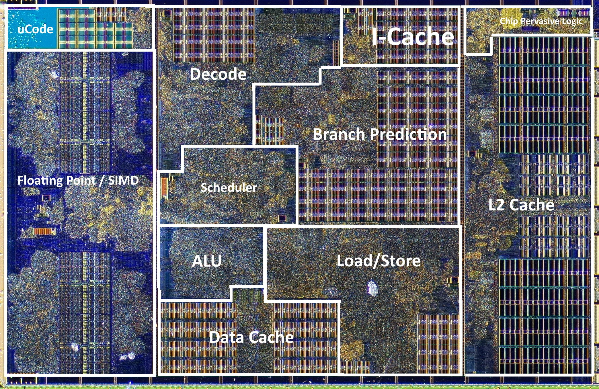
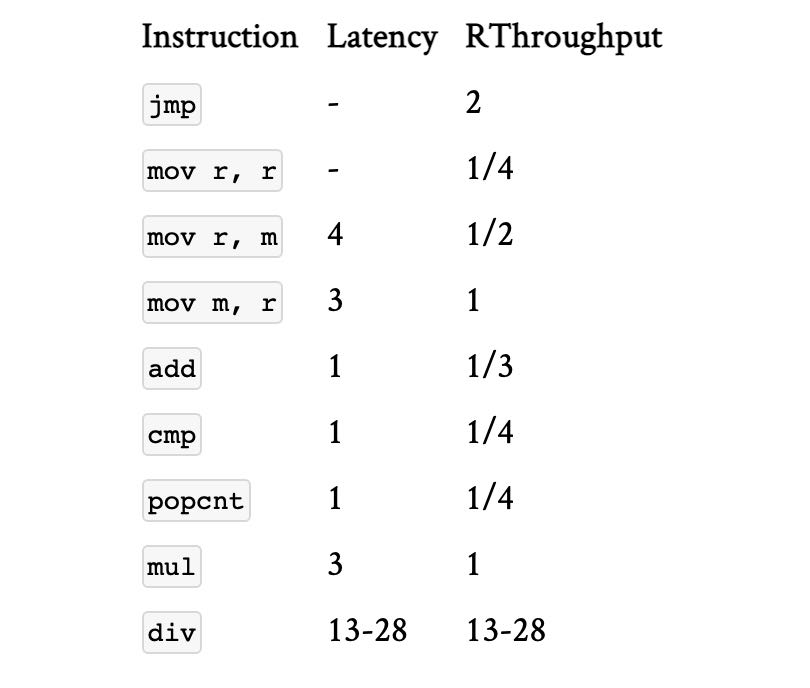

Algorithmica CompArch & Language
https://en.algorithmica.org/hpc/complexity/hardware/
Die shot of a Zen CPU core by AMD (~1,400,000,000 transistors)

程序设计语言和性能之间的关系
https://benchmarksgame-team.pages.debian.net/benchmarksgame/index.html
The key lesson here is that using a native, low-level language doesn’t necessarily give you performance; but it does give you control over performance.
Complementary to the “N operations per second” simplification, many programmers also have a misconception that using different programming languages has some sort of multiplier on that number. Thinking this way and comparing languages in terms of performance doesn’t make much sense: programming languages are fundamentally just tools that take away some control over performance in exchange for convenient abstractions. Regardless of the execution environment, it is still largely a programmer’s job to use the opportunities that the hardware provides.
https://en.algorithmica.org/hpc/architecture/indirect/
Computed Goto 在glibc IO-related部分非常常见
Compilers use this technique when the values are densely packed together (not necessarily strictly sequentially, but it has to be worth having blank fields in the table). It can also be implemented explicitly with a computed goto:
void weather_in_russia(int season) { static const void* table[] = {&&winter, &&spring, &&summer, &&fall}; goto *table[season]; winter: printf("Freezing\n"); return; spring: printf("Dirty\n"); return; summer: printf("Dry\n"); return; fall: printf("Windy\n"); return; }
Switch-based code is not always straightforward for compilers to optimize, so in the context of state machines, goto statements are often used directly. The I/O-related part of glibc is full of examples.
虚函数这种东西开销非常大，在性能关键场景都不会使用
During a virtual method call, that offset field is fetched from the instance of a structure, and a normal function call is made with it, using the fact that all methods and other fields of every derived class have exactly the same offsets.
Of course, this adds some overhead:
- You may need to spend another 15 cycles or so for the same pipeline flushing reasons as for branch misprediction.
- The compiler most likely won’t be able to inline the function call itself.
- Class size increases by a couple of bytes or so (this is implementation-specific).
- The binary size itself increases a little bit.
For these reasons, runtime polymorphism is usually avoided in performance-critical applications.
https://en.algorithmica.org/hpc/pipelining/branchless/
branchless可以消除control hazards, 但是却引入了data hazards. 不过相比control hazards这个penalty更低。
如果随机性很高的话( >25%)那么branchless是有效果的，反之branchy可能会更好，这个还是要看具体操作。
compiler hints有用，但是不是特别可靠，手写或者是使用PGO会更加可靠。
Using predication eliminates a control hazard but introduces a data hazard. There is still a pipeline stall, but it is a cheaper one: you only need to wait for cmov to be resolved and not flush the entire pipeline in case of a mispredict. However, there are many situations when it is more efficient to leave branchy code as it is. This is the case when the cost of computing both branches instead of just one outweighs the penalty for the potential branch mispredictions. In our example, the branchy code wins when the branch can be predicted with a probability of more than ~75%.
This 75% threshold is commonly used by the compilers as a heuristic for determining whether to use the cmov or not. Unfortunately, this probability is usually unknown at the compile-time, so it needs to be provided in one of several ways:
- We can use profile-guided optimization which will decide for itself whether to use predication or not.
- We can use likeliness attributes and compiler-specific intrinsics to hint at the likeliness of branches: __builtin_expect_with_probability in GCC and __builtin_unpredictable in Clang.
- We can rewrite branchy code using the ternary operator or various arithmetic tricks, which acts as sort of an implicit contract between programmers and compilers: if the programmer wrote the code this way, then it was probably meant to be branchless.
The “right way” is to use branching hints, but unfortunately, the support for them is lacking. Right now these hints seem to be lost by the time the compiler back-end decides whether a cmov is more beneficial. There is some progress towards making it possible, but currently, there is no good way of forcing the compiler to generate branch-free code, so sometimes the best hope is to just write a small snippet in assembly.
https://en.algorithmica.org/hpc/pipelining/tables/ https://www.agner.org/optimize/instruction_tables.pdf
Instruction Tables 主要是分析每个指令的延迟和吞吐
- throughput如果是<1的话(比如1/2)，那么说明这个过程是pipeline的，并且在2个cycles之后可以执行其他指令。如果是>1的话比如(2), 那么也是需要等待2cycles之后执行，但是没有pipeline
- 如果latency=0的话通常以为这CPU只是在FE上，不会到BE execution engine上
- 有些指令latency是可变的，并且通常认为数据是在L1 cache上

Some comments:
- Because our minds are so used to the cost model where “more” means “worse,” people mostly use reciprocals of throughput instead of throughput.
- If a certain instruction is especially frequent, its execution unit could be duplicated to increase its throughput — possibly to even more than one, but not higher than the decode width.
- Some instructions have a latency of 0. This means that these instruction are used to control the scheduler and don’t reach the execution stage. They still have non-zero reciprocal throughput because the CPU front-end still needs to process them.
- Most instructions are pipelined, and if they have the reciprocal throughput of nn, this usually means that their execution unit can take another instruction after nn cycles (and if it is below 1, this means that there are multiple execution units, all capable of taking another instruction on the next cycle). One notable exception is the integer division: it is either very poorly pipelined or not pipelined at all.
- Some instructions have variable latency, depending on not only the size, but also the values of the operands. For memory operations (including fused ones like add), latency is usually specified for the best case (an L1 cache hit).